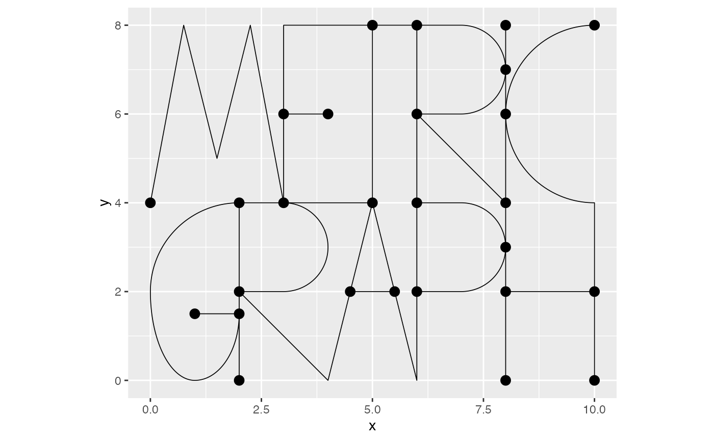
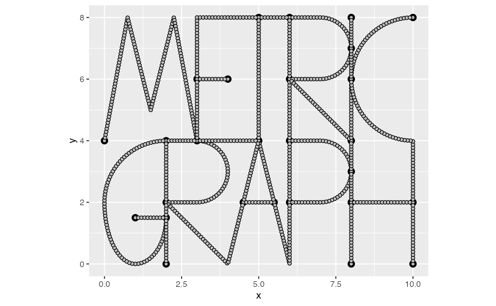
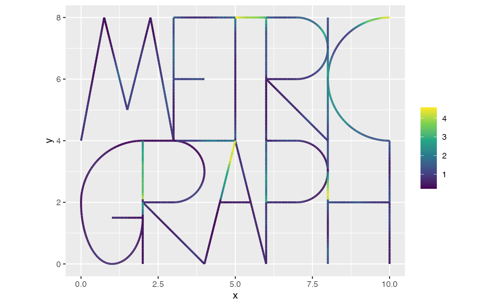
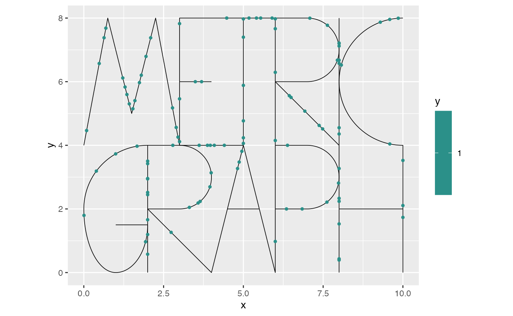
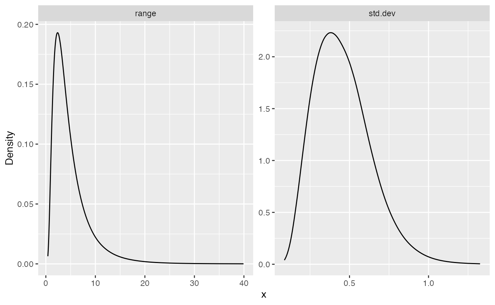
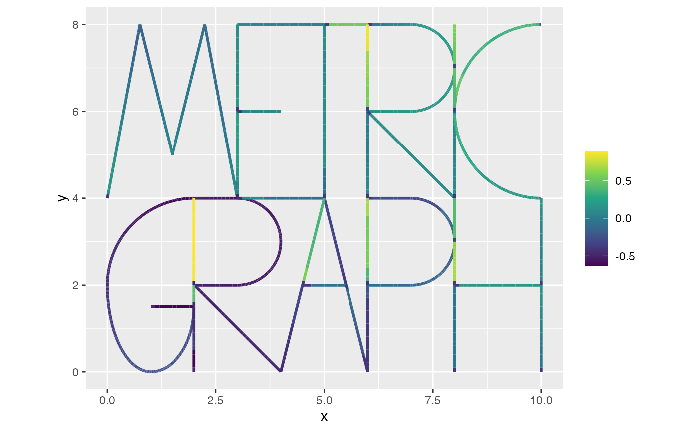
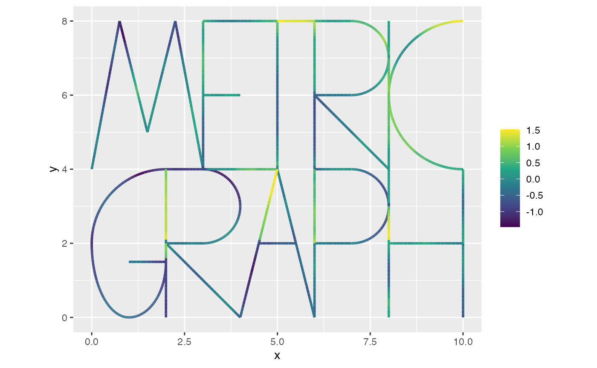

Log-Gaussian Cox processes on metric graphs
David Bolin, Alexandre B. Simas
Created: 2023-01-30. Last modified: 2025-05-21.
Source:vignettes/pointprocess.Rmd
pointprocess.RmdIntroduction
In this vignette we will introduce how to work with log-Gaussian Cox
processes based on Whittle–Matérn fields on metric graphs. To simplify
the integration with R-INLA and inlabru hese
models are constructed using finite element approximations as
implemented in the rSPDE package. The theoretical details
will be given in the forthcoming article (Bolin,
Simas, and Wallin 2023).
Constructing the graph and the mesh
We begin by loading the rSPDE, MetricGraph
and INLA packages:
library(rSPDE)
library(MetricGraph)
library(INLA)As an example, we consider the default graph in the package:
graph <- metric_graph$new(tolerance = list(vertex_vertex = 1e-1, vertex_edge = 1e-3, edge_edge = 1e-3),
remove_deg2 = TRUE)
graph$plot()
To construct a FEM approximation of a Whittle–Matérn field, we must first construct a mesh on the graph.
graph$build_mesh(h = 0.1)
graph$plot(mesh=TRUE)
The next step is to build the mass and stiffness matrices for the FEM basis.
graph$compute_fem()We are now ready to specify the and sample from a log-Gaussian Cox
process model with intensity
where
is an intercept and
is a Gaussian Whittle–Matérn field specified by
For this we can use the function
graph_lgcp as follows:
sigma <- 0.5
range <- 2
alpha <- 2
cov_lgcp <- graph$mesh$VtE[,1]/max(graph$mesh$VtE[,1])
lgcp_sample <- graph_lgcp_sim(intercept = -1 + 2*cov_lgcp, sigma = sigma,
range = range, alpha = alpha,
graph = graph)The object returned by the function is a list with the simulated Gaussian process and the points on the graph. We can plot the simulated intensity function as
graph$plot_function(X = exp(lgcp_sample$u), vertex_size = 0)
To plot the simulated points, we can add them to the graph and then plot:
graph$add_observations(data = data.frame(y=rep(1,length(lgcp_sample$edge_loc)),
edge_number = lgcp_sample$edge_number,
distance_on_edge = lgcp_sample$edge_loc,
cov_lgcp = lgcp_sample$edge_number),
normalized = TRUE)## Adding observations...## Assuming the observations are normalized by the length of the edge.
graph$plot(vertex_size = 0, data = "y")
In order to fit a log-Gaussian Cox process model, we need to specify
integration points on the graph, be able to evaluate the covariates at
such integration points. This process is a bit involved, so we have
created an interface to simplify the process. In this interface, by
default, the covariates are interpolated from the data provided in the
graph object to obtain their values at the integration
points.
The integration points are defined, by default, as the mesh locations if the metric graph object has a mesh. If the mesh is not provided, one must either provide the integration points manually or build a mesh.
At the end of the vignette, we will also show how to fit the model in
INLA without using our INLA interface for LGCP
models.
Fitting LGCP models with our INLA interface
We will now fit the model using our INLA interface. To
such an end, we will clear the observations from the graph and add the
data to the graph.
graph$clear_observations()
#Add the data together with the exposure terms
graph$add_observations(data = data.frame(y = rep(1,length(lgcp_sample$edge_loc)),
edge_number = lgcp_sample$edge_number,
distance_on_edge = lgcp_sample$edge_loc,
Intercept = 1,
cov_lgcp = lgcp_sample$edge_number/max(lgcp_sample$edge_number)),
normalized = TRUE)## Adding observations...## Assuming the observations are normalized by the length of the edge.We have added the response variable , however, this is not strictly necessary. If such a response variable is not provided, it will be assumed that all locations correspond to observed points.
Let us now create the rSPDE model object:
rspde_model <- rspde.metric_graph(graph, nu = alpha - 1/2)We can now fit the model using the lgcp_graph()
function:
inla_fit <- lgcp_graph(y ~ -1 + Intercept + cov_lgcp +
f(field, model = rspde_model), graph=graph)Let us observe the inla_fit object:
summary(inla_fit)## Time used:
## Pre = 2.06, Running = 0.552, Post = 0.0457, Total = 2.66
## Fixed effects:
## mean sd 0.025quant 0.5quant 0.975quant mode kld
## Intercept -0.545 0.331 -1.238 -0.533 0.071 -0.534 0
## cov_lgcp 0.976 0.491 0.030 0.969 1.964 0.969 0
##
## Random effects:
## Name Model
## field CGeneric
##
## Model hyperparameters:
## mean sd 0.025quant 0.5quant 0.975quant mode
## Theta1 for field -0.832 0.394 -1.680 -0.807 -0.141 -0.686
## Theta2 for field 1.120 0.658 -0.174 1.119 2.418 1.116
##
## Marginal log-Likelihood: -109.72
## is computed
## Posterior summaries for the linear predictor and the fitted values are computed
## (Posterior marginals needs also 'control.compute=list(return.marginals.predictor=TRUE)')Let us extract the estimates in the original scale by using the
spde_metric_graph_result() function, then taking a
summary():
spde_result <- spde_metric_graph_result(inla_fit, "field", rspde_model)
summary(spde_result)## mean sd 0.025quant 0.5quant 0.975quant mode
## std.dev 0.468737 0.17586 0.188141 0.450051 0.864532 0.403134
## range 3.794120 2.73377 0.849470 3.061360 11.099200 1.991310We will now compare the means of the estimated values with the true values:
result_df <- data.frame(
parameter = c("std.dev", "range"),
true = c(sigma, range),
mean = c(
spde_result$summary.std.dev$mean,
spde_result$summary.range$mean
),
mode = c(
spde_result$summary.std.dev$mode,
spde_result$summary.range$mode
)
)
print(result_df)## parameter true mean mode
## 1 std.dev 0.5 0.4687368 0.4031343
## 2 range 2.0 3.7941226 1.9913116If we have the actual values of the covariates at the integration
points, we can pass them to the lgcp_graph() function via
the manual_covariates argument.
manual_covariates <- data.frame(Intercept = 1,
cov_lgcp = graph$mesh$VtE[,1]/max(lgcp_sample$edge_number),
.group = 1)
inla_fit <- lgcp_graph(y ~ -1 + Intercept + cov_lgcp + f(field, model = rspde_model),
graph=graph, manual_covariates = manual_covariates, interpolate = FALSE)Let us observe the new inla_fit object:
summary(inla_fit)## Time used:
## Pre = 2.06, Running = 0.544, Post = 0.04, Total = 2.65
## Fixed effects:
## mean sd 0.025quant 0.5quant 0.975quant mode kld
## Intercept -0.726 0.362 -1.499 -0.714 -0.037 -0.716 0.001
## cov_lgcp 1.424 0.412 0.628 1.420 2.247 1.420 0.000
##
## Random effects:
## Name Model
## field CGeneric
##
## Model hyperparameters:
## mean sd 0.025quant 0.5quant 0.975quant mode
## Theta1 for field -0.866 0.417 -1.76 -0.84 -0.136 -0.712
## Theta2 for field 1.352 0.696 0.00 1.35 2.741 1.320
##
## Marginal log-Likelihood: -105.92
## is computed
## Posterior summaries for the linear predictor and the fitted values are computed
## (Posterior marginals needs also 'control.compute=list(return.marginals.predictor=TRUE)')We can now extract the estimates in the original scale
spde_result <- spde_metric_graph_result(inla_fit, "field", rspde_model)
summary(spde_result)## mean sd 0.025quant 0.5quant 0.975quant mode
## std.dev 0.45652 0.181032 0.172997 0.435522 0.868429 0.38128
## range 4.91905 3.849620 1.011020 3.835800 15.305900 2.37008We can also plot the posterior marginal densities with the help of
the gg_df() function:
posterior_df_fit <- gg_df(spde_result)
library(ggplot2)
ggplot(posterior_df_fit) + geom_line(aes(x = x, y = y)) +
facet_wrap(~parameter, scales = "free") + labs(y = "Density")
Finally, we can plot the estimated field :
n.obs <- length(graph$get_data()$y)
n.field <- dim(graph$mesh$VtE)[1]
u_posterior <- inla_fit$summary.linear.predictor$mean[(n.obs+1):(n.obs+n.field)]
graph$plot_function(X = u_posterior, vertex_size = 0)
This can be compared with the field that was used to generate the data:
graph$plot_function(X = lgcp_sample$u, vertex_size = 0)
We can also fit the model using the exact model by using the
graph_spde() function as the SPDE model:
spde_model <- graph_spde(graph, alpha = 1)Let us now fit the model:
inla_fit_spde <- lgcp_graph(y ~ -1 + Intercept + cov_lgcp +
f(field, model = spde_model), graph=graph)Let us observe the new inla_fit_spde object:
summary(inla_fit_spde)## Time used:
## Pre = 1.76, Running = 0.525, Post = 0.0494, Total = 2.33
## Fixed effects:
## mean sd 0.025quant 0.5quant 0.975quant mode kld
## Intercept -0.551 0.336 -1.253 -0.539 0.077 -0.540 0
## cov_lgcp 0.961 0.487 0.026 0.953 1.944 0.953 0
##
## Random effects:
## Name Model
## field CGeneric
##
## Model hyperparameters:
## mean sd 0.025quant 0.5quant 0.975quant mode
## Theta1 for field -0.654 0.548 -1.789 -0.635 0.366 -0.549
## Theta2 for field 1.343 0.922 -0.425 1.328 3.204 1.260
##
## Marginal log-Likelihood: -109.45
## is computed
## Posterior summaries for the linear predictor and the fitted values are computed
## (Posterior marginals needs also 'control.compute=list(return.marginals.predictor=TRUE)')We can now extract the estimates in the original scale
spde_result <- spde_metric_graph_result(inla_fit_spde, "field", spde_model)
summary(spde_result)## mean sd 0.025quant 0.5quant 0.975quant mode
## sigma 0.50432 0.200714 0.189121 0.480533 0.951447 0.397901
## range 5.87995 6.768320 0.663066 3.757220 24.215300 1.661400An example with replicates in our INLA interface
We start by simulating the data.
n.rep <- 30
sigma <- 0.5
range <- 2
alpha <- 2
cov_lgcp <- graph$mesh$VtE[,1]/max(graph$mesh$VtE[,1])
max_edge_num <- max(graph$mesh$VtE[,1])
lgcp_sample_rep <- graph_lgcp_sim(n = n.rep, intercept = -1 + 2*cov_lgcp, sigma = sigma,
range = range, alpha = alpha,
graph = graph)Let us clear the observations from the graph and add the simulated data.
graph$clear_observations()
df_rep <- data.frame(y=rep(1,length(lgcp_sample_rep[[1]]$edge_loc)),
edge_number = lgcp_sample_rep[[1]]$edge_number,
distance_on_edge = lgcp_sample_rep[[1]]$edge_loc,
Intercept = 1,
cov_lgcp = lgcp_sample_rep[[1]]$edge_number/max_edge_num,
rep = rep(1,length(lgcp_sample_rep[[1]]$edge_loc)))
for(i in 2:n.rep){
df_rep <- rbind(df_rep, data.frame(y=rep(1,length(lgcp_sample_rep[[i]]$edge_loc)),
edge_number = lgcp_sample_rep[[i]]$edge_number,
distance_on_edge = lgcp_sample_rep[[i]]$edge_loc,
Intercept = 1,
cov_lgcp = lgcp_sample_rep[[i]]$edge_number/max_edge_num,
rep = rep(i,length(lgcp_sample_rep[[i]]$edge_loc))))
}
graph$add_observations(data = df_rep,
normalized = TRUE,
group = "rep")## Adding observations...## Assuming the observations are normalized by the length of the edge.Let us now fit the model. In this case, the default column for the
replicates is .group, and also, by default, all replicates
will be used.
inla_fit <- lgcp_graph(y ~ -1 + Intercept + cov_lgcp + f(field, model = rspde_model, replicate = field.repl), graph=graph)## Warning in formula.character(object, env = baseenv()): Using formula(x) is deprecated when x is a character vector of length > 1.
## Consider formula(paste(x, collapse = " ")) instead.Let us observe the inla_fit object:
summary(inla_fit)## Time used:
## Pre = 2.13, Running = 25.4, Post = 1.1, Total = 28.7
## Fixed effects:
## mean sd 0.025quant 0.5quant 0.975quant mode kld
## Intercept -0.685 0.053 -0.789 -0.685 -0.581 -0.685 0
## cov_lgcp 1.221 0.083 1.057 1.221 1.384 1.221 0
##
## Random effects:
## Name Model
## field CGeneric
##
## Model hyperparameters:
## mean sd 0.025quant 0.5quant 0.975quant mode
## Theta1 for field -0.481 0.046 -0.572 -0.481 -0.392 -0.480
## Theta2 for field 0.585 0.106 0.377 0.585 0.793 0.584
##
## Marginal log-Likelihood: -2658.04
## is computed
## Posterior summaries for the linear predictor and the fitted values are computed
## (Posterior marginals needs also 'control.compute=list(return.marginals.predictor=TRUE)')Let us now extract the estimates in the original scale
spde_result <- spde_metric_graph_result(inla_fit, "field", rspde_model)
summary(spde_result)## mean sd 0.025quant 0.5quant 0.975quant mode
## std.dev 0.618695 0.0280739 0.564892 0.618286 0.675097 0.617726
## range 1.804520 0.1900280 1.460460 1.794450 2.206100 1.773610As in the previous case, we can also supply the covariates manually:
manual_covariates <- data.frame(
Intercept = 1,
cov_lgcp = rep(graph$mesh$VtE[,1]/max(graph$mesh$VtE[,1]), 30),
.group = rep(1:30, each = nrow(graph$mesh$VtE))
)
inla_fit <- lgcp_graph(y ~ -1 + Intercept + cov_lgcp +
f(field, model = rspde_model, replicate = field.repl),
graph=graph, manual_covariates = manual_covariates)## Warning in formula.character(object, env = baseenv()): Using formula(x) is deprecated when x is a character vector of length > 1.
## Consider formula(paste(x, collapse = " ")) instead.Let us observe the inla_fit object:
summary(inla_fit)## Time used:
## Pre = 1.9, Running = 25.2, Post = 1.19, Total = 28.2
## Fixed effects:
## mean sd 0.025quant 0.5quant 0.975quant mode kld
## Intercept -0.931 0.049 -1.026 -0.930 -0.836 -0.930 0
## cov_lgcp 1.866 0.075 1.718 1.865 2.013 1.865 0
##
## Random effects:
## Name Model
## field CGeneric
##
## Model hyperparameters:
## mean sd 0.025quant 0.5quant 0.975quant mode
## Theta1 for field -0.655 0.057 -0.768 -0.654 -0.545 -0.652
## Theta2 for field 0.591 0.131 0.334 0.590 0.850 0.588
##
## Marginal log-Likelihood: -2472.17
## is computed
## Posterior summaries for the linear predictor and the fitted values are computed
## (Posterior marginals needs also 'control.compute=list(return.marginals.predictor=TRUE)')Let us now extract the estimates in the original scale
spde_result <- spde_metric_graph_result(inla_fit, "field", rspde_model)
summary(spde_result)## mean sd 0.025quant 0.5quant 0.975quant mode
## std.dev 0.520492 0.0293267 0.464441 0.520035 0.579539 0.519559
## range 1.820460 0.2384790 1.399000 1.804160 2.334290 1.771910Fitting LGCP models without our INLA interface
We are now in a position to fit the model with our
R-INLA implementation, without using our INLA
interface for LGCP models. When working with log-Gaussian Cox processes,
the likelihood has a term
that needs to be handled separately. This is done by using the mid-point
rule as suggested for SPDE models by Simpson et al. (2016) where we approximate
Using the fact that
from the FEM approximation, we can write the integral as
where
and
is a vector with integration weights. These quantities can be obtained
as
Atilde <- graph$fem_basis(graph$mesh$VtE)
atilde <- graph$mesh$weightsThe weights are used as exposure terms in the Poisson likelihiood in R-INLA. Because of this, the easiest way to construct the model is to add the integration points as zero observations in the graph, with corresponding exposure weights. We also need to add the exposure terms (which are zero) for the actual observation locations:
#clear the previous data in the graph
graph$clear_observations()
#Add the data together with the exposure terms
graph$add_observations(data = data.frame(y = rep(1,length(lgcp_sample$edge_loc)),
e = rep(0,length(lgcp_sample$edge_loc)),
edge_number = lgcp_sample$edge_number,
distance_on_edge = lgcp_sample$edge_loc,
Intercept = 1,
cov_lgcp = lgcp_sample$edge_number/max(lgcp_sample$edge_number)),
normalized = TRUE)## Adding observations...## Assuming the observations are normalized by the length of the edge.
#Add integration points
graph$add_observations(data = data.frame(y = rep(0,length(atilde)),
e = atilde,
edge_number = graph$mesh$VtE[,1],
distance_on_edge = graph$mesh$VtE[,2],
Intercept = 1,
cov_lgcp = graph$mesh$VtE[,1]/max(lgcp_sample$edge_number)),
normalized = TRUE)## Adding observations...
## Assuming the observations are normalized by the length of the edge.We now create the inla model object with the
graph_spde function. For simplicity, we assume that
is known and fixed to the true value in the model.
rspde_model <- rspde.metric_graph(graph, nu = alpha - 1/2)Next, we compute the auxiliary data:
data_rspde <- graph_data_spde(rspde_model, name="field", covariates = c("Intercept","cov_lgcp"))We now create the inla.stack object with the
inla.stack() function. At this stage, it is important that
the data has been added to the graph since it is supplied
to the stack by using the graph_spde_data() function.
stk <- inla.stack(data = data_rspde[["data"]],
A = data_rspde[["basis"]],
effects = data_rspde[["index"]])We can now fit the model using R-INLA:
spde_fit <- inla(y ~ -1 + Intercept + cov_lgcp + f(field, model = rspde_model),
family = "poisson", data = inla.stack.data(stk),
control.predictor = list(A = inla.stack.A(stk), compute = TRUE),
E = inla.stack.data(stk)$e)Let us extract the estimates in the original scale by using the
spde_metric_graph_result() function, then taking a
summary():
spde_result <- rspde.result(spde_fit, "field", rspde_model)
summary(spde_result)## mean sd 0.025quant 0.5quant 0.975quant mode
## std.dev 0.45652 0.181032 0.172996 0.435521 0.86843 0.38128
## range 4.91904 3.849600 1.011020 3.835800 15.30590 2.37008We will now compare the means of the estimated values with the true values:
result_df <- data.frame(
parameter = c("std.dev", "range"),
true = c(sigma, range),
mean = c(
spde_result$summary.std.dev$mean,
spde_result$summary.range$mean
),
mode = c(
spde_result$summary.std.dev$mode,
spde_result$summary.range$mode
)
)
print(result_df)## parameter true mean mode
## 1 std.dev 0.5 0.4565199 0.381280
## 2 range 2.0 4.9190434 2.370085An example with replicates
We now clear the previous data and add the new data together with the exposure terms
graph$clear_observations()
df_rep <- data.frame(y=rep(1,length(lgcp_sample_rep[[1]]$edge_loc)),
e = rep(0,length(lgcp_sample_rep[[1]]$edge_loc)),
edge_number = lgcp_sample_rep[[1]]$edge_number,
distance_on_edge = lgcp_sample_rep[[1]]$edge_loc,
Intercept = 1,
cov_lgcp = lgcp_sample_rep[[1]]$edge_number/max_edge_num,
rep = rep(1,length(lgcp_sample_rep[[1]]$edge_loc)))
df_rep <- rbind(df_rep, data.frame(y = rep(0,length(atilde)),
e = atilde,
edge_number = graph$mesh$VtE[,1],
distance_on_edge = graph$mesh$VtE[,2],
Intercept = 1,
cov_lgcp = graph$mesh$VtE[,1]/max_edge_num,
rep = rep(1,length(atilde))))
for(i in 2:n.rep){
df_rep <- rbind(df_rep, data.frame(y=rep(1,length(lgcp_sample_rep[[i]]$edge_loc)),
e = rep(0,length(lgcp_sample_rep[[i]]$edge_loc)),
edge_number = lgcp_sample_rep[[i]]$edge_number,
distance_on_edge = lgcp_sample_rep[[i]]$edge_loc,
Intercept = 1,
cov_lgcp = lgcp_sample_rep[[i]]$edge_number/max_edge_num,
rep = rep(i,length(lgcp_sample_rep[[i]]$edge_loc))))
df_rep <- rbind(df_rep, data.frame(y = rep(0,length(atilde)),
e = atilde,
edge_number = graph$mesh$VtE[,1],
distance_on_edge = graph$mesh$VtE[,2],
Intercept = 1,
cov_lgcp = graph$mesh$VtE[,1]/max_edge_num,
rep = rep(i,length(atilde))))
}
graph$add_observations(data = df_rep,
normalized = TRUE,
group = "rep")## Adding observations...## Assuming the observations are normalized by the length of the edge.We can now define and fit the model as previously
rspde_model <- rspde.metric_graph(graph, nu = alpha - 1/2)
data_rspde <- graph_data_spde(rspde_model, name = "field",
repl = ".all", repl_col = "rep",
covariates = c("Intercept","cov_lgcp"))
stk <- inla.stack(data = data_rspde[["data"]],
A = data_rspde[["basis"]],
effects = data_rspde[["index"]])
spde_fit <- inla(y ~ -1 + Intercept + cov_lgcp +
f(field, model = rspde_model, replicate = field.repl),
family = "poisson", data = inla.stack.data(stk),
control.predictor = list(A = inla.stack.A(stk), compute = TRUE),
E = inla.stack.data(stk)$e)Let’s look at the summaries
spde_result <- rspde.result(spde_fit, "field", rspde_model)
summary(spde_result)## mean sd 0.025quant 0.5quant 0.975quant mode
## std.dev 0.520491 0.0293267 0.464441 0.520035 0.579539 0.519558
## range 1.820460 0.2384790 1.399000 1.804160 2.334290 1.771910
result_df <- data.frame(
parameter = c("std.dev", "range"),
true = c(sigma, range),
mean = c(
spde_result$summary.std.dev$mean,
spde_result$summary.range$mean
),
mode = c(
spde_result$summary.std.dev$mode,
spde_result$summary.range$mode
)
)
print(result_df)## parameter true mean mode
## 1 std.dev 0.5 0.5204915 0.5195585
## 2 range 2.0 1.8204601 1.7719073